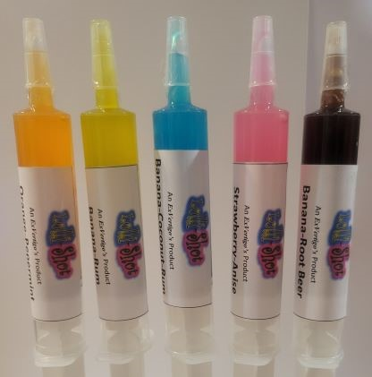

Sweets and Treats!
Lolli-Shots
Shaffy
Lolli-Shots Size and Price:
• Large - $4.00 ea (or 2 for $7.00)
• Medium - $3.00 ea (or 3 for $8.00)
• Small - $2.00 ea (or 4 for $7.00)
• Fun Size - $1.00 ea (or Buy 3 Get 1 Free)
Shaffy Price:
• Shaffy Price: $4.00 ea (1.5 oz bag)
Flavors (for both Lolli-Shots and Shaffy)
• B-C-R (Banana-Coconut-Rum)
• Butterscotched Apple
• Butter Mint
• Candy Cane
• Cream Soda
• Orange Goodness
• Peach
• Piña Colada
• Pumpkin Pie
• Pumpkin Spice
• Sour Butterscotched Apple
• Sour Watermelon
• Strawberry Anise
• Strawberry Cheesecake
What is a Lolli-Shot?
A Lolli-Shot is a viscous* candy that is contained in a syringe. And, before you ask, no, it does contain alcohol. This is an all-ages-friendly candy.
*Viscous: having a thick, sticky consistency between solid and liquid – Google Dictionary
Why Distribute in a syringe?
We could go with the reason that I heard from a little girl: “…so that you are not scared when you go to the doctor for a shot!”. However, we use a syringe simply as a fun and controlled distribution device.
What is a Shaffy?
A Shaffy is a candy that is hard when you start eating it and soft by the end. These candies are cut into about 1/4-inch, square-ish, pieces.